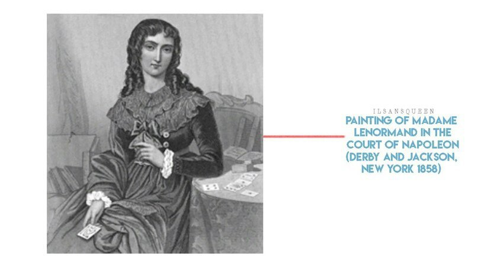

This painting by the French artist Jean-Francois Rolland is called Madame Lenormand in the Salon. Madame Lenormand was said to be an astrologer, the highly regarded wife of Napoleon, Josephine. Before becoming an astrologer, Josephine, she was known for reading tarot for noble women and the patronage of fortune. Her ‘Lenormand Oracle Card’ is known for influencing many cards from other decks. Even now, the oracle card is sold on most tarot sites. Since Madame Lenormand was a famous astrologer, there are many paintings where she holds or reads cards.
The mentioned picture is one of them. But here we need to focus on another detail. The painting by French artist Jean-Francois Rolland, “Madame Lenormand in the Salon” was a gentle touch to a peculiar lyrical atmosphere, but it was lost in a fire in a collector's mansion. The owner of the mansion was known for his craving for art, demonstrating the life of high society in the Napoleonic era, so he looked for paintings on the site of the fire and was engaged in their restoration. Many paintings were restored, but only a part with maps was saved from this one. This part of the picture was presented by me in a previous post. The “flower card” in her hand is a card from the Ashbless set, based on the Smeraldo flower. This is the only trace in history left by the Smeraldo and William Ashbless. 